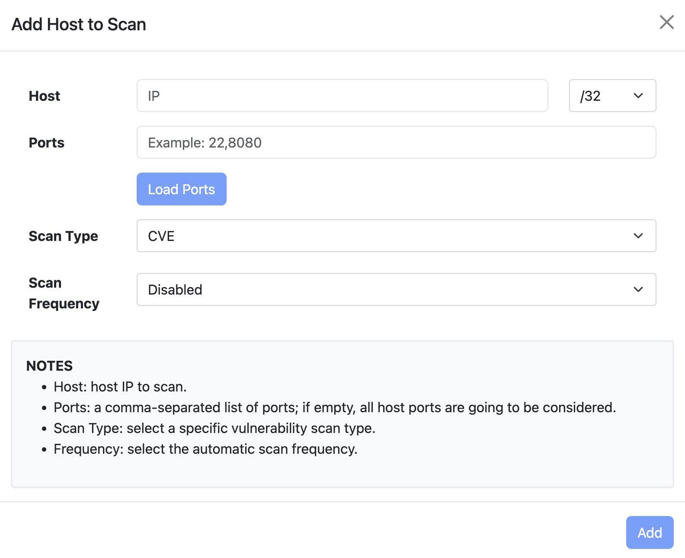

Активное сканирование
Предупреждение
Поддержка этой функции недоступна на Windows.
ntopng может как пассивно контролировать сеть, так и выполнять сканирование, целью которого является обнаружение TCP или UDP открытых портов в предоставляемых услугах.
Текущая реализация использует Нмап. Код предназначен для добавления новых типов сканеров путем простого определения новых модули.
Страница находится в меню Мониторинг и открыть ее могут только администраторы. Для этого необходимо установить nmap в системе ntopng: без него кнопки, запускающие сканирование, отключены, и в их всплывающей подсказке указано, почему.
На странице имеется пять вкладок:
Обзор: хосты для сканирования (см. ниже);
Открытые порты: открытые порты, обнаруженные при сканировании (требуется ntopng Enterprise L или выше);
Подробности сканирования: результат одного сканирования. Он открывается из строки Обзора; до тех пор вкладка отключена;
Исторические данные: диаграммы сканирований (требуется ntopng Pro или выше);
Отчеты о сканировании: отчеты о сканировании (требуется ntopng Enterprise L или выше).
Вкладка, для которой требуется лицензия, которой у вас нет, отображается отключенной: наведите на нее указатель мыши, чтобы узнать, почему.
Страница активного сканирования

Страница активного сканирования
На странице «Активное сканирование» можно просмотреть зарегистрированные хосты, которые можно сканировать, а также различные сведения о последнем выполненном сканировании, например:
Статус сканирования (может быть «Сканирование», «Запланировано», «Успешно», «Не сканировано», «Ошибка», «Ошибка»);
Тип сканирования;
TCP Порты (количество открытых TCP найденных портов);
UDP Порты (количество открытых UDP найденных портов);
Последняя продолжительность;
Последнее сканирование;
Периодичность
После выполнения ntopng сканирования портов TCP или UDP ntopng сравнивает открытые порты, обнаруженные при мониторинге сети, с открытыми портами, обнаруженными во время сканирования:
Если активное сканирование определяет открытый порт TCP (или UDP), который в настоящее время не используется в соответствии с результатами мониторинга сети, отображается призрачный значок.
 будет отображаться рядом с количеством открытых TCP (или UDP) портов конкретного хоста;
будет отображаться рядом с количеством открытых TCP (или UDP) портов конкретного хоста;Если при активном сканировании не удается определить порт TCP (или UDP), который фактически используется, но порт ntopng обнаруживает его посредством мониторинга сети (порт был отфильтрован активным сканированием), отображается значок фильтра.
 будет отображаться рядом с количеством открытых портов TCP (или UDP) для конкретного хоста.
будет отображаться рядом с количеством открытых портов TCP (или UDP) для конкретного хоста.
Над таблицей расположены три кнопки:
Alerts Explorer (чтобы просмотреть оповещения, созданные в результате сканирования, см. Оповещения);
Запланировать все сканирования (чтобы запланировать сканирование для всех хостов в активном списке сканирования);
Добавить хост для сканирования (о добавлении хоста или сети см. ниже).
Под таблицей расположены кнопки, изменяющие весь список:
Пакетное редактирование (для обновления периодического сканирования для всех хостов в активном списке сканирования требуется ntopng Enterprise L или выше);
Удалить сбой (чтобы удалить из списка активного сканирования только те хосты, последнее сканирование которых не удалось, то есть хосты, которые были недоступны или не удалось просканировать. Кнопка активна только при наличии хотя бы одного отказавшего хоста);
Удалить все (чтобы удалить все хосты из списка активного сканирования).
Без ClickHouse сохраняется только последний отчет: об этом напоминает примечание под таблицей.
В конце Сканировать все выполнение, если конечная точка уведомления и связанный получатель имеют Тип уведомления установлен на Отчеты об активном сканировании, уведомление отправляется по завершении периодического сканирования.
Добавить хост в список активного сканирования

Добавить хост в список активного сканирования
Нажав на Добавить хост для сканирования На странице «Активное сканирование» пользователь может добавить новый хост или включить все активные хосты под определенным CIDR (сеть, например 192.168.1.0/24).
Если пользователь назначает конкретный активный хост, ntopng автоматически заполнит поле «Порты» известными портами сервера такого другого хоста. Если неизвестно, поле будет пустым, и все порты будут проверены. Обратите внимание, что сканирование всех портов может занять много времени, поэтому мы предлагаем (если возможно) ограничить сканирование небольшим набором портов.
После выбора хоста и портов обязательно выберите один из типов активного сканирования. На данный момент поддерживаются три типа сканирования:
TCP Портскан
UDP Портскан
IPv4 Netscan (находит узлы сети; найденные узлы затем можно сканировать с использованием типов сканирования, выбранных в том же окне)
Предупреждение
«UDP Portscan» доступен только в Linux.
Периодические сканирования
Примечание
Для периодического сканирования требуется ntopng Enterprise L или выше.
Сканирование может выполняться по требованию (однократно) или периодически. У вас есть возможность указать ежедневное сканирование (выполняется каждый день в полночь) или еженедельное (каждое воскресенье в полночь). Чтобы избежать перегрузки сети агрессивными сканированиями, за раз выполняется только одно сканирование.
Если конечная точка уведомления и связанный получатель с параметром «Тип уведомления», установленным на «Отчеты об активном сканировании», включены, уведомление отправляется после завершения периодического сканирования.
Действия

Меню действий со строками
В каждой строке есть кнопка «Действия»: сама кнопка редактирует хост, стрелка рядом открывает остальные действия:
Редактировать хост (чтобы изменить характеристики выбранной строки);
Schedule Scan (чтобы запланировать сканирование выбранного хоста);
Загрузить отчет о последнем сканировании (чтобы загрузить файл, содержащий самый последний результат сканирования);
Показать отчет о последнем сканировании (для отображения результатов последнего сканирования на вкладке «Сведения о сканировании»);
Удалить (чтобы удалить конкретный хост из списка сканирования);
Загрузка отчета о последнем сканировании и отображение отчета о последнем сканировании отключены до тех пор, пока хост не будет просканирован в первый раз. Нажатие на адрес сканируемого хоста также открывает результат его последнего сканирования.
Настройки

Настройки активного сканирования
Под Активное сканирование вкладке страницы «Настройки», можно:
Чтобы изменить максимальное количество сканирований, выполняемых одновременно. Значение по умолчанию — 4, минимум 1 и максимум 16.
Включить режим медленного сканирования, чтобы снизить уровень агрессивности сканирования.
Подробности сканирования

Подробности сканирования
Нажав на Показать отчет о последнем сканировании в меню Действия конкретной строки (или по адресу хоста) открывает вкладку Детали сканирования с последним результатом сканирования выбранного хоста, как написано nmap. В заголовке страницы указан путь Активное сканирование / <хост>: нажмите на Активное сканирование чтобы вернуться к списку. Если ntopng в данный момент видит хост, его адрес ссылается на страницу хоста.
Оповещения
Если сканирование выполняется периодически, ntopng сравнивает каждую итерацию сканирования и генерирует оповещения при каких-либо изменениях, таких как открытие нового порта или изменение количества CVE. Оповещения необходимо включить на странице «Поведенческие проверки» следующим образом:

Доступ к созданным оповещениям можно получить на странице обозревателя оповещений в меню «Активный мониторинг» или с помощью Обозреватель оповещений кнопку на странице активного сканирования. Кнопка неактивна, если оповещения отключены в настройках.
Графики

На вкладке «Исторические данные» показаны диаграммы временных рядов, заполненные данными сканирования (требуется версия ntopng Pro или выше).
Ntopng в настоящее время записывает следующие данные:
Хосты (количество хостов, готовых к сканированию);
Открытые порты (количество обнаруженных открытых портов);
Scanned Hosts (количество просканированных хостов);
Открытые порты

На странице «Открытые порты» можно отобразить список открытых портов TCP и UDP, обнаруженных при активном сканировании, а также следующую информацию:
Имя службы;
Количество хостов;
Хосты (список ограничен пятью хостами, если доступно более пяти);
Нажав на Показать хосты кнопка определенной строки, ntopng возвращает к обзору и показывает только хосты с выбранным открытым портом. Порт отображается в виде фильтра над таблицей: нажмите на его х (или на Очистить фильтры), чтобы снова увидеть всех хозяев.
Щелчок по хосту в столбце «Хосты» открывает результат последнего сканирования на вкладке «Сведения о сканировании».
Отчеты о сканировании
Примечание
Для страницы отчетов требуется ntopng Enterprise L или выше.
Примечание
Если ClickHouse отключено, на вкладке «Отчеты о сканировании» отображается только отчет о последних выполнениях сканирования, а не список отчетов.
Если ClickHouse включено, на вкладке «Отчеты о сканировании» перечислены все отчеты, автоматически созданные ntopng.

С помощью кнопки «Действия» отдельного отчета можно отредактировать имя отчета (сама кнопка) или удалить отчет (стрелка рядом с ним).
При нажатии на дату строки открывается выбранный отчет. В заголовке страницы указан путь Активное сканирование / Отчеты о сканировании / <имя отчета>: нажмите на Отчеты о сканировании чтобы вернуться к списку. Рядом с названием отчета расположены кнопки скачать отчет в виде файла, загрузить ранее скачанный файл отчета и распечатать отчет (версия для печати открывается в новом окне).

Отчет формируется:
По окончании периодических сканирований;
После выполнения всех сканирований, инициированных нажатием кнопки «Запланировать все сканирования»;
В конце отдельного сканирования;
Отчет об активном сканировании состоит из четырех различных отчетов: отчета об активном сканировании, количества CVE, портов TCP и портов UDP.
Отчет об активном сканировании
Отчет об активном сканировании содержит следующую информацию:
IP-адрес;
Имя (Имя хоста);
Тип сканирования;
TCP/UDP Порты (Список открытых TCP/UDP портов);
Последнее сканирование (дата последнего выполнения сканирования);
Можно открыть сведения о сканировании этого хоста, щелкнув IP-адрес.
TCP Отчет о портах

Отчет о портах TCP показывает следующую информацию:
Порт (в формате: <portID/tcp (имя службы)>);
Количество хостов;
Хозяева;
UDP Отчет о портах

Отчет о портах UDP показывает следующую информацию:
Порт (в формате: <portID/udp (имя службы)>)
Количество хостов;
Хозяева;